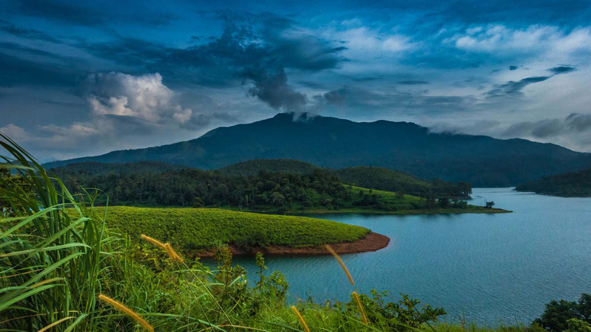
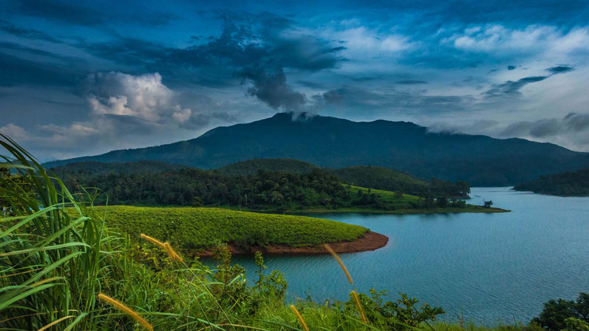

Geography of Kerala

Kerala (38,863 km2; 1.18% of India's land) is situated between the Arabian Sea (Lakshadweep Sea) to the west and the Western Ghats to the east. Kerala's coast runs some 580 km in length, while the state itself varies between 35–120 km in width. Geologically, pre-Cambrian and Pleistocene formations comprise the bulk of Kerala's terrain. The topography consists of a hot and wet coastal plain gradually rising in elevation to the high hills and mountains of the Western Ghats. Kerala lies between northern latitude of 8°.17'.30" N and 12°. 47'.40" N and east longitudes 74°.27'.47" E and 77°.37'.12" E.[2] Kerala's climate is mainly wet and maritime tropical,[3] heavily influenced by the seasonal heavy rains brought up by the monsoon.
Climate
Kerala, which lies in the tropic region, is mostly subject to the type of humid tropical wet climate experienced by most of Earth's rainforests. As per Köppen climate classification, it belongs to the category of Tropical monsoon climate[4] Meanwhile, its extreme eastern fringes experience a drier tropical wet and dry climate. Kerala receives an average annual rainfall of 3107 mm – some 7,030 crore m3 of water. This compares to the all-India average is 1,197 mm. Parts of Kerala's lowlands may average only 1250 mm annually while the cool mountainous eastern highlands of Idukki district – comprising Kerala's wettest region – receive in excess of 5,000 mm of orographic precipitation (4,200 crore of which are available for human use) annually. Kerala's rains are mostly the result of seasonal monsoons. As a result, Kerala averages some 120–140 rainy days per year. In summer, most of Kerala is prone to gale-force winds, storm surges, and torrential downpours accompanying dangerous cyclones coming in off the Indian Ocean. Kerala's average maximum daily temperature is around 37 °C; the minimum is 19.8 °C. The moisture-laden winds of the Southwest Monsoon, on reaching the southernmost point of the Indian Peninsula, because of its topography, divides into two branches; the "Arabian Sea Branch" and the "Bay of Bengal Branch".[5] The "Arabian Sea Branch" of the Southwest monsoon first hits the Western Ghats,[6] making Kerala the first state in India to receive rain from the Southwest monsoon.[7][8]
Geography in Kerala State
A substantial portion of Malabar Coast including the western coastal lowlands and the plains of the midland may have been under the sea in ancient times. Marine fossils have been found in an area near Changanassery, thus supporting the hypothesis.[9] Pre-historical archaeological findings include dolmens of the Neolithic era in the Marayur area of the Idukki district, which lie on the eastern highland made by Western Ghats. Rock engravings in the Edakkal Caves, in Wayanad, date back to the Neolithic era around 6000 BCE.[10][11] Eastern Kerala consists of land encroached upon by the Western Ghats; the region thus includes high mountains, gorges, and deep-cut valleys. The wildest lands are covered with dense forests, while other regions lie under tea and coffee plantations (established mainly in the 19th and 20th centuries) or other forms of cultivation. Forty-one of Kerala's forty-four rivers originate in this region, and the Cauvery River descends from there and drains eastwards into neighboring states. Here, the Western Ghats form a wall of mountains penetrated near Palakkad; here, a natural mountain pass known as the Palakkad Gap breaks through to access inner India. The Western Ghats rises on average to 1500 m elevation above sea level. Certain peaks may reach to 2500 m. Just west of the mountains lie the midland plains, comprising a swathe of land running along central Kerala. Here, rolling hills and shallow valleys fill a gentler landscape than the highlands. In the lowest lands, the midlands region hosts paddy fields; meanwhile, elevated lands slopes play host to groves of rubber and fruit trees in addition to other crops such as black pepper, tapioca, and others. Wayanad is the sole Plateau in Kerala.[12] The eastern regions in the districts of Wayanad, Malappuram (Chaliyar valley at Nilambur), and Palakkad (Attappadi Valley), which together form parts of the Nilgiri Biosphere Reserve and a continuation of the Mysore Plateau, are known for natural Gold fields, along with the adjoining districts of Karnataka.[13]
Finally, Kerala's coastal belt is relatively flat, teeming with paddy fields, groves of coconut trees, and heavily crisscrossed by a network of interconnected canals and rivers. The comparative water-richness of the coastal belt can be partly gauged by the fact that Kuttanad, with its backwaters canals and rivers, itself comprises more than 20% of India's waterways by length. Kuttanad, also known as The Rice Bowl of Kerala, has the lowest altitude in India, and is also one of the few places in world where cultivation takes place below sea level.[14][15] Minerals including Ilmenite, Monazite, Thorium, and Titanium, are found in the coastal belt of Kerala.[16] Kerala's coastal belt of Karunagappally is known for high background radiation from thorium-containing monazite sand. In some coastal panchayats, median outdoor radiation levels are more than 4 mGy/yr and, in certain locations on the coast, it is as high as 70 mGy/yr.[17] The most important of Kerala's forty-four rivers include the Periyar (244 km in length), the Bharathapuzha (209 km), the Pamba River (176 km),the chaliyar river(169) the Chalakudy Puzha(144 km), the Kadalundipuzha (130 km), and the Achancoil (128 km). Most of the remainder are small and entirely fed by the Monsoons. Main article: List of rivers in Kerala Periyar, the longest river of Kerala. There are 44 rivers in Kerala, all but three originating in the Western Ghats. 41 of them flow westward and 3 eastward. The rivers of Kerala are small, in terms of length, breadth and water discharge. The rivers flow faster, owing to the hilly terrain and as the short distance between the Western Ghats and the sea. All the rivers are entirely monsoon-fed and many of them shrink into rivulets or dry up completely during summer.
 

The Kerala Backwaters region is a particularly well-recognized feature of Kerala; it is an interconnected system of brackish water lakes and river estuaries that lies inland from the coast and runs virtually the length of the state. These facilitate inland travel throughout a region roughly bounded by Thiruvananthapuram in the south and Vatakara (which lies some 450 km to the north). There are 34 backwaters in Kerala Lake Vembanad—India's largest body of water —dominates the backwaters; it lies between Alappuzha and Kochi and is over 200 km2 in area. Major lakes of Kerala include: